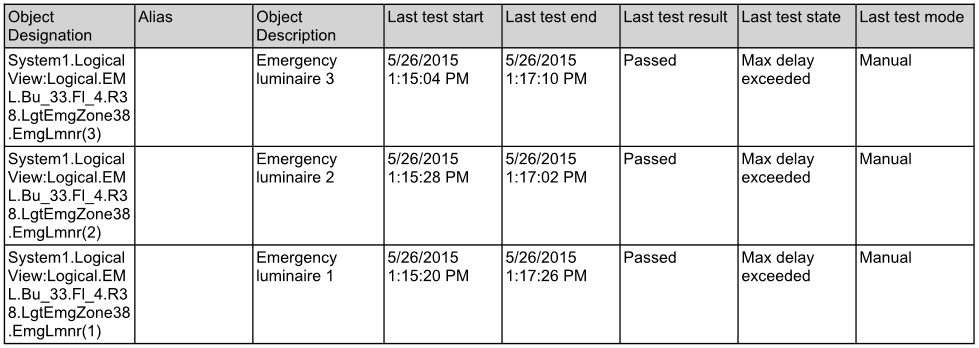

Emergency lighting
Test emergency lighting on a regular basis. The frequency of the function test depends on:
- National standards
- Local regulations
- Building use (hospital, office building, warehouse, cinema, etc.)
- Manufacturer information
- Possibly other factors
The information can be compiled in a report after the function test and printed and saved.

NOTE 1:
A continuous test drains the emergency luminaire batteries and has no voltage during an emergency. Never conduct a function test (discharging batteries) for the entire building. Ensure that emergency lighting and power are operational at all times for safety reasons.
NOTE 2:
Do not conduct a continuous test during main hours, late afternoon or at night. Sufficient lighting must be available during an emergency, since it can take up to several hours to charge drained batteries.
NOTE 3:
Hang up information signs prior to conducting a continuous test.
Function of Emergency Lighting
General
Back-up power must automatically takes over power supply for mandatory safety lighting in the event of a power failure.
Support
Desigo CC supports emergency lighting with DALI bus integration and integrated test and operating functions.
Test Function
Information is saved in emergency lighting if a test function is conducted. In addition, individual manufacturers indicate the state with an LED.
Test Data
Desigo CC collects the saved data after a test and compiles it in a report.
Test and Operating Functions
The testing depth may vary depending on the frequency of a test. The table below lists all functions supported in Desigo CC.
Emergency Lighting Functions | |
Function | Description |
Start function test | The function test briefly places the device in a power outage state. This test does not impact battery capacity. |
Start short duration test | Places the device in power outage state long enough to calculate battery capacity without fully discharging the battery. |
Start long duration test | Places the device in power outage state long enough to measure battery capacity. |
Stop active test | Stops a running function or running continuous test. A cancelled test must be repeated within a defined period as per national standards. |
Rest operating mode | Overrides the active power outage state and switches off emergency lighting. This command can only be conducted in an active power outage state; it relieves batteries once the situation is safe. |
Inhibit operating mode | Prevents the device from going to the power outage state. Can only be run as long as power is available. Used for planned power outages. |
Cancel Inhibit operating mode | Removes the Inhibit operating mode and switches the device to normal operation. Can only be run as long as power is available. |
Reset luminaire hours of operation | Resets hours of operation on emergency lighting. Usually reset after scheduled replacement of luminaires. Hours of operation reset must be done on the individual object if only individual defective luminaires are replaced. |
Switch-off pulse | Switchable and dimmable devices that are not controlled by a local switch remain in an emergency state after a function or continuous test. This command is reset to Off. |
NOTE:
Not all emergency lighting supports test functions available in Desigo CC. Ask your manufacturer which test functions support the installed emergency lighting.
Evaluating Test Report
A draft test report must be analyzed for possible faults in the emergency lighting. The measures for a fault depend on the availability of additional emergency lighting in this room.
Test Report
